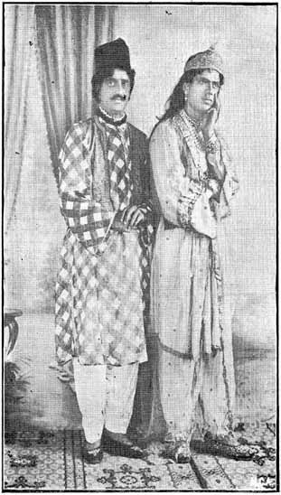
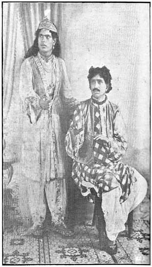

Raghavachari as ‘Pathan Rustum’
BY P. V. RAJAMANNAR, B.A., B.L.
|
 |
 |
Raghavachari as ‘Pathan Rustum’
One finds the audience getting slightly bored with the street-minstrel's ballad narrating the-mighty deeds of Rama Raj; and some have even started conversation in undertones, when all at once there is a hush and a volley of applause. The audience is paying its customary tribute due to one of the greatest living actors of South India, T. Raghavachari, in one of his most successful roles as ‘Pathan Rustum’.
The play itself ‘Rama Raj’ otherwise known as ‘The fall of Vijayanagar’ occupies an important place in modern Telugu Drama. It is one of the few tragedies in the language which has always had an appeal both to the cultured and to the average play-goer. It has a historical setting and flavour and is fraught with a deep meaning to the Andhras, releasing as it does a train of memories, proud and happy as well as sad. It is intensely exciting; the emotions depicted are violent, when compared to the placid atmosphere prevailing in most of the Puranic dramas. And it is but fitting that such a play should be bound up with the superb acting of Raghavachari which itself marks an epoch in the history of the South Indian Stage.
The story is that of the fall of the famous Vijayanagar Empire which reached its zenith in the time of Krishna Devaraya; and culminated in wholesale destruction at the Battle of Tallikota. But dramatically it is the tragedy of Rama Raj.
Raghavachari so much fills the stage as Pathan that many are apt to forget that the tragic hero in the play, according to all recognised canons of dramatic criticism, is Rama Raj and not Pathan. Pathan is not endowed with any of the traits that are usually termed ‘heroic.’ The tragedy is that of Rama Raj, the mighty warrior, the grand monarch, valiant, brave, generous to a fault, brought to ruin from his high estate by his ‘fatal weakness’ for women, which exceeds not only the bounds of virtue but of propriety. The person at whose hands he meets his death is none other than his own illegitimate son, an epitome of his weakness and the self-wrought instrument of retribution.
Pathan then is not a tragic hero. He has not the requisite proportions; there is nothing of the grand style about him. It would be a sad mistake for anyone to look for such a representation from Raghavachari as Pathan. But if one does want to see him as a tragic hero, let him attend ‘Prahlada’ the next time that Raghavachari acts as Hiranya in it.
Pathan Rustum is the illegitimate son of Rama Raj by a Mohammedan woman, though he is ignorant of the fact. But there is no denying that this serious handicap to a great extent must have told on his bringing up and consequently on his character. We constantly miss in him, in the great moments of life, the stability and equilibrium of character, that we expect of him as a valiant Pathan.
We meet him at the opening of the play as an adventurer seeking his fortune at the hands of the Hindu monarch. Raghavachari's make-up and acting easily impress upon us the picture of this young man, sensitive, light-hearted,–his whole life before him. But before the end of the scene we find a change. The non-chalance is gone, the balance has been easily disturbed. He cannot bear with equanimity the ignominy and the insults heaped on his Mohammedan brethren and immediately he swears the destruction of the Hindu Kingdom.
When we meet him again in the ante-chamber of Rama Raj, he is already a captain in the Hindu army. Ashabi, the daughter of the Nabob of Mudugal, is brought in and openly insulted by Rama Raj. The Pathan's hand goes to his sword; there is anger on his face but his discretion gets the better of his indignation. And he stands struck by her beauty as much as by the insult offered to her.
The next scene in the garden finds him love-sick, infatuated with Ashabi's beauty. Raghavachari's acting in this scene has been the subject of some comment. It is said that he appears to us as a light-hearted young man whose only occupation is love-making and not as a zealous Mohammedan obsessed with his idea of vengeance. This comment, I think, betrays a lack of the full understanding of Pathan's character. Pathan Rustum is not capable of such concentrated devotion to an ideal. His equilibrium is easily disturbed by every gust of emotion and his passionate nature seizes the emotion, feeds on it till it intoxicates him, and then he is a slave to it.
Raghavachari therefore indulges in a bit of love-making and soon he is a slave to the charms of Ashabi, and taunted for his inaction in the ante-chamber, he reveals to her his determination to exterminate the Hindu Empire. (Fig. I)
Pathan Rustum gets an excellent opportunity to start the conflagration when he is sent to the Bahmini Sultans escorting a singer from the Hindu Court. In this scene also we find the same impetuousness, characteristic of him, which is well depicted by Raghavachari.
Being in Bijapur he goes to meet his mother and the terrible revelation comes down on him with all the suddenness of an avalanche and it leaves him on the brink of madness. The scene itself is one of the most powerful in the play and dramatically marks the crisis. We can realise the very foundations of Rustum's life quivering with the magnitude of the revelation as we see the great actor on the stage. Some fastidious critics may charge him as being too violent in expression, but the fact remains that his expression is so dynamic and fraught with vital excitement that it infects the audience perceptibly.
The crisis in the Pathan's life leaves him abjectly helpless; he finds his heart ‘aflame with a hundred fires’ or again, as he says, his heart is tossed helter-skelter by a hundred storms. The depiction of this desperate inaction by Raghavachari is marvelous. His disheveled hair, his indifferent dress, his vacant looks, and his aimless movements all bear the minutest study. As the curtain rises, we find him seated sighing away in a state of indecision. Then he argues out the significance of his situation with respect to each line of action that he may pursue. The agony, the horror, the shame of it all, one after the other appear in, and pass in succession from, his face. Ashabi enters in a triumphant mood only thinking of the day when her wrongs would be avenged and is surprised at her lover's condition, and like a woman confident of her hold, upbraids him with indifference and faithlessness. Pathan reacts at once and loudly assures her of his love. He cannot be calm for a moment; his nervous system is so highly strung that the least excitation upsets him. When Ashabi taunts him with cowardice, he becomes grandiloquent. And at last he bursts out with his terrible secret. But Ashabi rises equal to the occasion; she hands him his sword; she bids him get up and bring her the villain's head for her wedding gift. Pathan is almost dumbfounded at the suggestion. He cannot react to it at once and simply murmurs, "I cannot think of anything." One cannot forget his look of utter despair tinged with unspeakable horror perhaps at the visualised thought of murdering his own father. (The photograph No. II has not caught and cannot catch it all.) It is only when Ashabi threatens suicide that Pathan springs into animation, but the animation is but the beginning of that feverish state of excitement almost bordering on madness, which only ends in the natural course of things when he shuffles off his mortal coil.
Then the final scene of the tragedy. The dreadful deed has been done. Vijayanagar has fallen; the city is destroyed and wholesale pillage and massacre follow. But the Pathan's peace of mind has been banished forever. For him there is no more normal life. During the whole scene Raghavachari depicts the Pathan as completely mad, with lucid intervals now and again. It is hard to say which is the more terrible to behold, the mad raving or the sober interval; but one thing only stands out as to which there cannot be diverse opinions,–acting of the very highest order.
Raghavachari has portrayed for us different aspects and kinds of madness. As Hiranya he has interpreted for us the madness of thwarted egoism; as Keechaka the madness of lust. In Dasaratha he gives us a picture of the madness of grief; in Ramadas the frenzy of devotion. In the fall of Vijayanagar, he gives us a study in the madness of remorse. It is a masterly study but it passes description because in the acting of Raghavachari there is a creative element always present which works out a variety of detail not capable of a definite analysis. We notice several stages in his madness, we find the forces gathering when Ashabi enters to be a victim of them. The sudden entrance of Ashabi startles him, as it were, into a realisation of the terrible truth, but it also supplies him with a target for his accumulated emotion struggling aimlessly and he shoots Ashabi dead.
The shot, the physical effect of the shot, for a short while makes him sober. But there is nothing left to him of life; nothing left but to put an end to it. And thus the curtain falls on the violent unnatural end of this passion-child and one almost wonders how else it could end. But it should not be forgotten that the sense of the inevitable that fills our mind at the close of the play is in a very great measure due to the supreme acting of Raghavachari. Where a lesser artist would have failed and given us tawdry, sentimental melodrama, the master succeeds in giving us an example of high-class tragic acting.